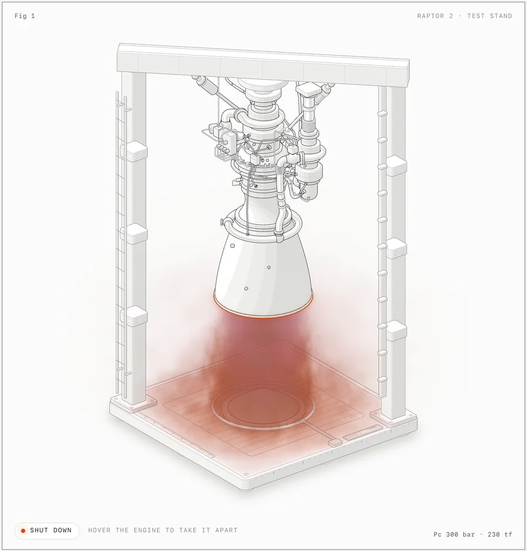

Edition 012 · Week of October 16, 2026
This week's 10
Your AI agent's toolkit fills up. Seven of this week's ten picks are things an AI coding agent can install or use: a skill finder, a gym for training, a coding brain, a context manager, a diagram drawer, an emulator and a document editor. The other three put creative tools in your own hands.
storytold/wordcraftWordCraft
A free, open-source document editor that works like Word - runs on your computer, no subscription, no account.


wheresryan22/anatomyAnatomy
An AI agent that turns a text description into a labeled medical or scientific figure, with your AI coding tool.

yetone/magpieMagpie
One app to manage all your AI agents - Claude, ChatGPT, Gemini and 60 more, side by side.
- #4find-skillsvercel-labs/skillsThe npx skills tool - finds and installs skills for your AI coding agent from skills.sh.Use it yourself+1.7K stars this week
- #5OpenGymDuarteSantos8/openGymA free workout tracker and gym planner that runs on your phone - no subscription, no ads.Use it yourself+4.5K stars this week
- #6Orcastablyai/orcaAn AI coding brain that understands your whole codebase and writes code that fits - used by AI agents as their engine.For developersStill climbing · +24.4K stars this month
- #7context-modemksglu/context-modeA skill that teaches your AI coding agent to read the right files before it writes code - fewer mistakes, less wasted context.For developers+4K stars this week
- #8AnyPS5boykopovar/AnyPS5A free PS5 emulator that runs PlayStation 5 games on your computer - early but playable.Use it yourself+25.2K stars this week
- #9Xerjxerj-org/xerjA tiny, fast web framework for Rust that makes building APIs as simple as writing a function.For developers+1.6K stars in a day
- #10diagram-designcathrynlavery/diagram-designA skill that teaches your AI coding agent to draw clear, good-looking diagrams - system maps, flowcharts, timelines and more.Use it yourself+10.2K stars this week
How this week was picked: 240 candidates from 5 of 6 sources (GitHub Trending, Trendshift, skills.sh, findarepo, Hacker News). YouTube was not scanned (CAPTCHA in cloud). GitHub search found candidates only (not an independent source). 19 cleared all floors. Picks: 6 by score, 3 new this week (under 45 days), 1 still climbing (over 90 days). Every repo passed our safety check on Oct 16. openai/math settled PASS by routine (activity flag: 14.9K stars on 5 commits - the repo is a research manuscript archive, not software). 4 repos taken down this week: deepseek-ai/deepseek-harness (5 CVEs), hugohe3/ppt-master (2 advisories), openai/codex (3 CVEs), farion1231/cc-switch (CVE under review). Ebony-Vinyl/dsh-our-free-model skipped (its platform deepseek-harness is blocklisted). DeepSeek-Reasonix still FAIL (new advisory). Tips: none this week (data/tips.md empty).